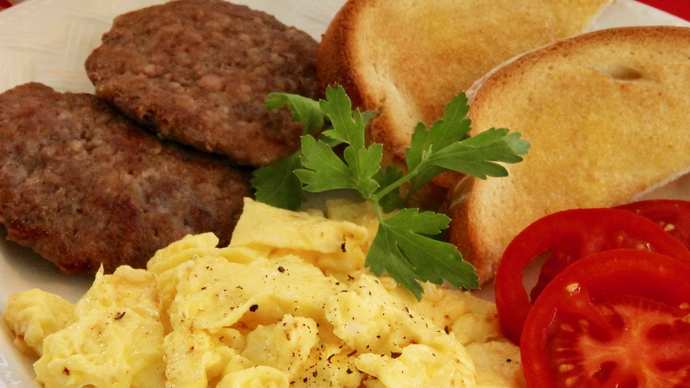

Scrambled Eggs

Description
Scrambled eggs is a dish made from eggs (usually chicken eggs) stirred, whipped or beaten together while
being gently heated, typically with salt, butter, oil and sometimes other ingredients.
Ingredients
- 2 eggs
- 1 teaspoon mayonnaise or salad dressing
- 1 teaspoon water (Optional)
- 1 teaspoon margarine or butter
- 1 pinch salt and pepper to taste
Steps
- In a cup or small bowl, whisk together the eggs, mayonnaise and water using a fork.
- Melt margarine in a skillet over low heat.
- Pour in the eggs, and stir constantly as they cook.
- Remove the eggs to a plate when they are set, but still moist.
- Add salt and pepper.